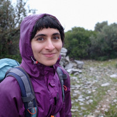

About me

Rodothea Myrsini (Romy) Tsoupidi
My name is Romy and, I currently work as an engineer at SambaNova. In June 2023, I defended my Ph.D. at the School of Electrical Engineering and Computer Science (EECS), Royal Institute of Technology (KTH). My main research interests are in the area of compiler design, software-based security, side-channel attack mitigations, constraint programming, software diversification, and SMT solving.